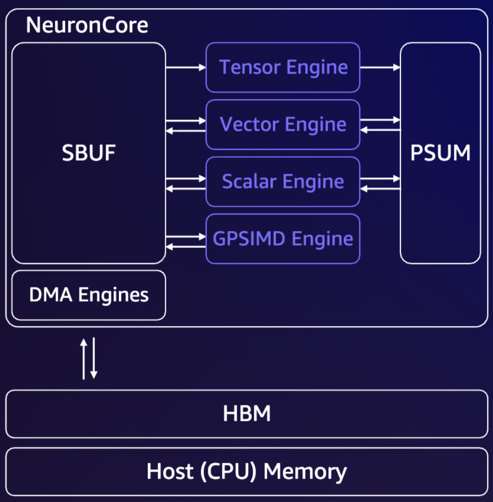
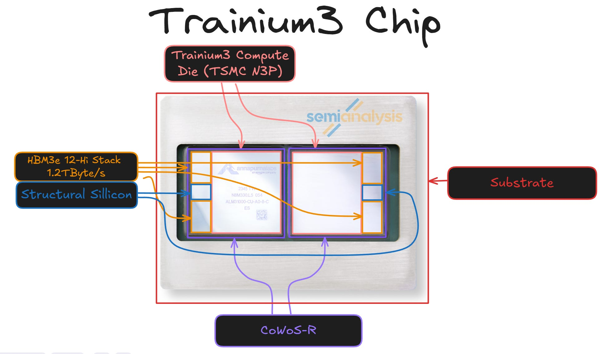
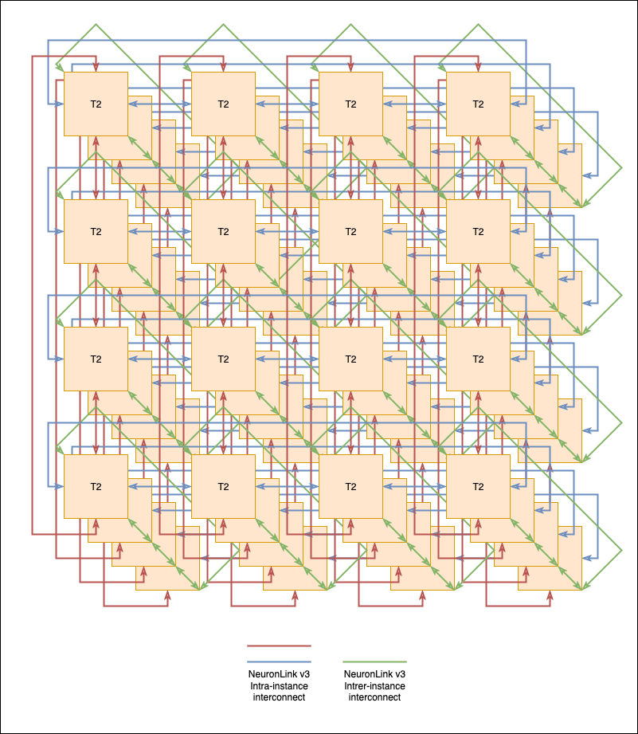
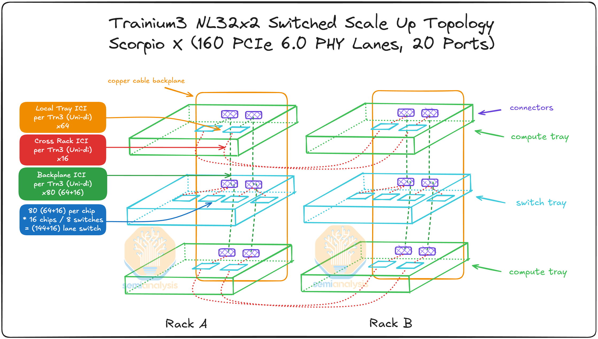
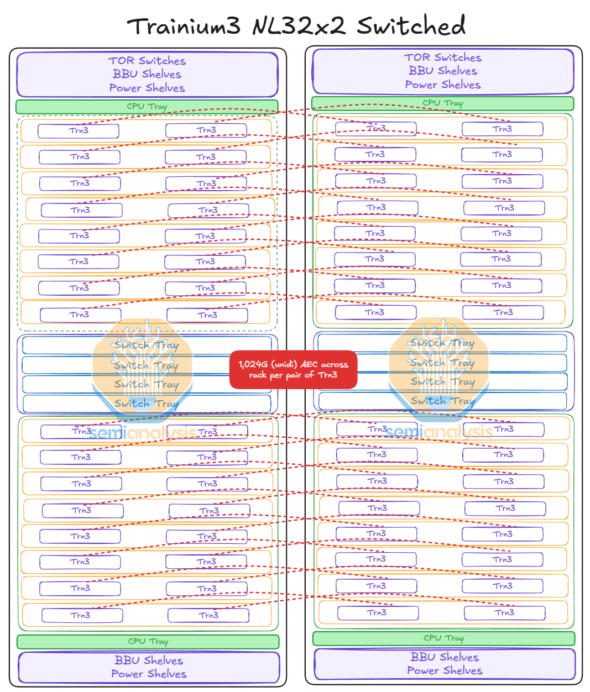
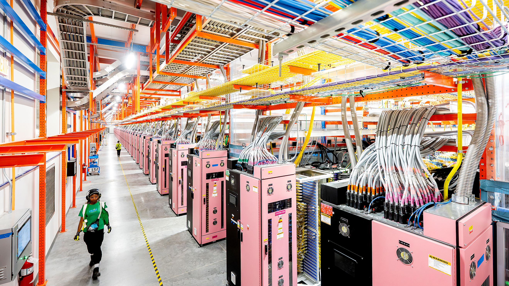

Hardware Accelerators for Generative AI #
Generative AI (GenAI) workloads, especially those dominated by transformer architectures in LLMs, have computational demands that general-purpose CPUs were never designed to satisfy. CPUs excel at low-latency control flow, irregular computation, and a broad range of general workloads, but they offer relatively limited parallelism, modest memory bandwidth, and low arithmetic throughput compared to what large-scale neural networks demand. Core operations such as matrix multiplication, which are abundant in neural networks, thrive on Single-Instruction-Multiple-Data (SIMD) execution, massive parallel compute arrays, and fast access to on-chip memory – capabilities that exceed the architectural intent of CPUs (which are meant for general purpose programs).
As a result, the industry has increasingly turned to specialized hardware accelerators that are purpose-built for GenAI to achieve the necessary balance between performance, affordability, and sustainability. Operating a fleet of servers for high volume inference, as is done by the cloud hyperscalers today, consistently requires low latency (TTFT, OTPS, etc.) for good user experience. Moreover, the computational demand for serving continuous, real-time user requests has become a dominant financial and environmental burden. Consequently, the focus for inference optimization has decisively shifted toward minimizing the total cost of ownership, which means maximizing energy efficiency (a core component of green computing; to reduce the operational and environmental expenses from power and cooling). While NVIDIA GPUs were the first widely adopted solution, more recently, a new wave of domain-specific accelerators are gaining traction. These include hardware like AWS Trainium and Inferentia, and Google’s TPU families, which go beyond general-purpose parallel processors, and instead co-design the entire vertical stack, i.e., silicon, compiler, runtime, and interconnect around the computational demands of large-scale machine learning workloads.
Modern AI accelerators are domain-specific hardware (ASICs or highly specialized chips) explicitly designed to speed up the heavy linear algebra (matrix-multiply, tensor operations) found in neural network inference/training. In what follows, we discuss the typical architecture model: how memory and compute units are organized, how that impacts LLM inference performance, and its implications on inference optimization strategies. Although, as a case study, we turn to AWS Trainium (Trn), these concepts are applicable in general to other AI accelerators as well. The Trn family of chips – Trn1, Trn2, and Trn3, is Amazon Web Services’ family of custom-built AI accelerator chips, designed not just for raw speed (in both training and inference), but to offer a significantly superior total cost of ownership for massive-scale GenAI deployments.
NeuronCore: The fundamental compute unit in Tranium #
A NeuronCore is basically a compute core (analogous to a TensorCore in a TPU) that integrates dedicated tensor, vector, and scalar engines, along with software-managed on-chip SRAM, to compute neural network operations like matmuls efficiently. Because these engines operate in hardware-organized parallel units and often asynchronously (with compiler/runtime scheduling), the accelerator can run different parts of a neural network pipeline in parallel. These engines are visualized below:

NeuronCore architecture (credits: AWS Neuron Docs)
A NeuronCore is comprised of the following four heterogeneous compute engines:
-
Tensor engine: The Tensor Engine is the primary high-throughput compute unit inside a NeuronCore, responsible for accelerating the dense linear-algebra operations that dominate modern LLMs. It is built around a large systolic array that performs matrix multiplications and convolutions with extremely high arithmetic intensity, supporting mixed-precision formats such as BF16, FP16, and MXFP8/4. A NeuronCore-v4 Tensor Engine (used in Trn3 chips delivers 315 MXFP8/MXFP4 TFLOPS, 79 BF16/FP16/TF32, or 20 FP32 TFLOPS of tensor computations. Because attention projections, feed-forward layers, and most MLP operations reduce to GEMMs (GEneral Matrix Multiplications), the Tensor Engine is responsible for the vast majority of FLOPs in LLM inference.
-
Vector engine: The Vector Engine handles the wide range of elementwise and vectorized operations, in which every element of the output is dependent on multiple input elements. Examples include axpy operations (Z=aX+Y), Layer Normalization, activation functions, and Pooling operations. By offloading these non-matmul operations to dedicated vector hardware, the NeuronCore avoids bottlenecks on the Tensor Engine and enables overlap between matmul-heavy and vectorization-heavy phases of LLM execution. It can deliver 1.2 TFLOPS of FP32 computations.
-
Scalar engine: This engine is optimized for scalar computations in which every element of the output is dependent on one element of the input (e.g., activations, absolute value, etc.). It executes per-element control logic and delivers 1.2 TFLOPS of FP32 computations. By isolating these lightweight tasks onto a dedicated scalar pipeline, the NeuronCore prevents them from stalling the Tensor or Vector Engines, and enabling overlap.
-
GPSIMD engine: Each GPSIMD engine consists of eight fully-programmable 512-bit wide vector processors. They can execute general purpose C-code and access the embedded on-chip SRAM, allowing the implementation of custom operators and their execution directly on the NeuronCores. It serves as the flexible “catch-all” compute unit within a NeuronCore, designed to handle operations that do not map cleanly onto the tensor, vector, or scalar engines. This flexibility ensures that the NeuronCore can efficiently support evolving LLM workloads, experimental layers, and optimization techniques – all while maintaining a predictable dataflow execution schedule.
Memory hierarchy in a Trainium chip #
Now that we have outlined the core compute engines of a NeuronCore, i.e., the Tensor, Vector, Scalar, and GPSIMD units, the next question is how these engines are consistently kept supplied with the data they need. The performance of an AI accelerator is not only determined by the raw FLOPs of the compute engines, but also hinges on the efficiency of the memory hierarchy that moves model weights and activations through the chip. In modern accelerators, data does not simply flow through a conventional cache system as in a CPU – instead, a carefully structured hierarchical high-bandwidth off-chip memory, software-managed on-chip SRAM, and dedicated Direct Memory Access (DMA) pathways, control how tensors are staged, reused, and pipelined. Understanding this memory subsystem is essential, because the effectiveness of the compute engines is directly tied to how well the underlying memory architecture can support the dataflow patterns of LLM inference. We definitely do not want the compute engines to stay idle, waiting for the data to arrive.
The following figure shows how the compute engines in a NeuronCore are connected to the four hierarchical memories (which are described in detail below).

NeuronCore architecture with memory blocks (credits: AWS Neuron Docs)

NeuronCore memory hierarchy showing capacity and bandwidth for each level (credits: AWS Neuron Docs)
As in the above figure, each NeuronCore exposes a four-level hierarchy of memories – ranging from large but slow external memory to small, extremely fast on-chip buffers (such a memory hierarchy is present for most other AI accelerators as well). The qualitative latency numbers (pyramid schematic above) are not meant to be exact but help build intuition of the fact that on-chip memories (sometimes also referred to as on-chip SRAM) closer to the compute engines offer higher bandwidth and lower latency, but also much smaller capacity. The exact numbers may differ for different chips as well as different generations of the same chip family, but the general trend remains the same. Understanding the tradeoff between speed and size is essential for writing high-performance kernels for GenAI, where compute is often cheap (owing to the powerful compute engines), but data movement dominates both latency and energy.
External memory: Host DRAM and Device HBM #
Host DRAM refers to the main system memory attached to the host CPU, typically implemented using Double Data Rate (DDR) technologies. In AI accelerator systems, host DRAM sits outside the accelerator device and serves as the primary memory for the operating system, ML frameworks, and application-level data structures. Model checkpoints are often initially loaded into host DRAM from storage before being transferred to accelerator-attached memory (such as HBM – described next), and input/output tensors may be staged there between inference requests.
From the perspective of an AI accelerator, host DRAM is high-capacity but high-latency and low-bandwidth compared to on-device memory. As a result, accelerators do not directly execute kernels on host DRAM data. Instead, host DRAM acts as a staging and coordination layer, while performance-critical computation occurs entirely on the device after inputs have been explicitly transferred. In inference workloads (like LLM serving), host DRAM is commonly used to manage request queues, tokenize inputs, batch requests, and orchestrate data movement, while model weights and intermediate activations are kept resident in accelerator memory. Efficient inference pipelines therefore minimize round-trips to host DRAM, treating it as a control-plane and staging resource rather than part of the compute-critical data path.
High Bandwidth Memory (HBM) is a specialized DRAM technology designed to deliver extremely high memory bandwidth while maintaining relatively low energy per byte transferred. Unlike conventional DDR memory, HBM stacks multiple dies vertically and connects them to the accelerator die. This design trades clock speed for width, resulting in bandwidths that are an order of magnitude higher than host DRAM, which is critical for data-intensive AI workloads.
In modern AI accelerators, HBM serves as the primary device memory that stores model weights, activations, KV caches, and intermediate tensors during execution. While HBM is significantly faster than host DRAM, it is still much slower and higher-latency than on-chip SRAM (i.e., SBUF and PSUM, described later). As a result, accelerators typically use HBM for staging working sets into smaller on-chip buffers for computation. This often makes HBM bandwidth (not compute FLOPs) a dominant performance limiter for many inference workloads, particularly during autoregressive decoding where large KV caches must be repeatedly read as tokens are generated one-by-one.
From a system-design perspective, HBM capacity and bandwidth directly constrain the maximum model size, batch size, and achievable throughput on a single device. For LLM inference, keeping weights and KV tensors resident in HBM avoids expensive transfers over the host interconnect, while careful tiling and reuse strategies minimize repeated HBM accesses. Consequently, many inference optimizations, such as quantization, KV-cache compression, operator fusion, and attention variants, can be understood as techniques for reducing HBM traffic, making effective use of this precious resource.
Internal (on-chip) memory: SBUF and PSUM #
At the top of the accelerator memory hierarchy sit the on-chip memories, which provide the highest bandwidth and lowest latency access to the compute engines. In Trn accelerators, these memories are explicitly software-managed and are central to the dataflow execution model. Two such memories are particularly important: State Buffer (SBUF) and Partial Sum Buffer (PSUM).
SBUF is the primary general-purpose on-chip SRAM and acts as the main working memory for a compute core. All compute engines—tensor, vector, scalar, and GPSIMD—can read from and write to SBUF. Before any computation begins, input tensors must be explicitly loaded from HBM into SBUF, and once computation completes, results must be written back from SBUF to HBM.
Because SBUF offers dramatically higher bandwidth and lower latency than HBM, it is also used to hold intermediate tensors generated during execution. In LLM inference, this includes tiled weight blocks, activation fragments, attention intermediates, and residual values that are reused across multiple operations within a layer. Effective use of SBUF—through careful tiling, data reuse, and operator fusion—allows many computations to proceed without repeatedly accessing HBM, which is critical for both throughput and latency. However, SBUF capacity is limited, so kernels must carefully manage the lifetime of data to avoid spills back to slower memory.
PSUM is a smaller, specialized on-chip memory designed specifically to support high-throughput matrix multiplication on the Tensor Engine, allowing the Tensor Engine to accumulate partial results from multiple matrix-multiply tiles into the same output region. This makes PSUM essential for large GEMMs, where the final output matrix is produced by accumulating many smaller tiled computations.
In transformer models, operations such as attention projections and MLP layers rely heavily on this accumulation pattern. PSUM enables these matmuls to be executed efficiently without repeatedly materializing intermediate results in SBUF or HBM. While the vector and scalar engines can also access PSUM, its limited capacity makes it best reserved for Tensor Engine accumulation, with completed tiles quickly evicted to SBUF for further processing or storage.
Importance of writing good kernels for inference optimization #
Performance on NeuronCores depends not only on using the compute engines effectively but also on mapping dataflow to this memory hierarchy. When the live set of activations, weights, and partial results fits entirely within the on-chip memory, the compiler can construct pipelines that overlap DMA transfers, computation, and post-processing. If the working set exceeds SBUF or PSUM capacity, the compiler must insert spill/fill cycles to HBM, increasing latency and reducing effective throughput.
At this point, it is important to clarify the role of kernels in an accelerator programming model. A kernel is simply a function (in a domain specific language (DSL) e.g., Triton, NKI, etc.) that explicitly specifies how computation is mapped onto the available compute engines (Tensor, Vector, Scalar, and GPSIMD) and memory hierarchy (HBM, SBUF, and PSUM). Rather than relying on implicit hardware behavior, kernels optimize how tensors are tiled, where data is staged, which engine executes each operation, and when data is moved between memory levels. Their primary goal is to maximize utilization of fast on-chip resources—keeping frequently reused data resident in SBUF or PSUM, while minimizing expensive spill and refill traffic to HBM. In the context of LLM inference, well-designed kernels enable predictable, low-latency execution by aligning the dataflow of transformer workloads with the underlying hardware, ensuring that compute engines remain busy and memory bandwidth is used efficiently. Kernels for Trainium are written using the Neuron Kernel Interface (NKI) language.
Scale-up networking: From Trainium chip to Trainium Server #
So far, we have focused on how a single accelerator chip extracts performance through specialized compute engines and a carefully managed memory hierarchy. However, modern LLMs rarely run on a single chip in isolation. Model sizes, KV cache growth, and throughput requirements quickly exceed the capacity of one device, making scale-up within a server a fundamental part of inference system design. In this next section, we move beyond the single-chip view and examine how multiple accelerator chips are interconnected within a server, how memory and compute are aggregated across devices, and how communication bandwidth and latency shape the practical limits of LLM inference at scale.


Trainium chip consisting of eight (8) NeuronCores and four (4) banks of HBM (SemiAnalysis & AWS Neuron Docs)
Physically, the Trainium chip is a rectangular accelerator package with the compute silicon at the center and multiple HBM stacks placed closely around it, all mounted on a high-density substrate. This tight integration is what enables Trn3’s very high on-device memory bandwidth. Inside the package, the main die is subdivided into many identical NeuronCores, each containing its own tensor, vector, scalar, and GPSIMD engines plus local on-chip SRAM. These cores are arranged in a regular grid and connected by a high-bandwidth on-chip interconnect so data and synchronization can flow efficiently across the chip. Surrounding the compute die are the four banks of HBM stacks.
From a system perspective, Trn is typically deployed as a PCIe accelerator card (or equivalent module) in a server. The card exposes high-speed links for host connectivity and device-to-device communication, allowing multiple Trn chips to be wired together within a single server for scale-up (as we see next). This makes Trn resemble modern high-end GPUs or other AI ASICs: a large package optimized for memory proximity, mounted on a board designed to deliver power, cooling, and interconnect bandwidth at scale.
To address modern LLM workloads, servers connect multiple accelerators using high-bandwidth, low-latency scale-up interconnects, allowing compute and memory resources to be aggregated. We now shift from the chip-level perspective to the scale-up architecture of a server (as in the figure below), examining how multiple accelerators are interconnected, how data and synchronization flow between them, and why this design is critical for efficient large-model inference.

Trn3 ultraserver with several connected Trn chips (credits: AWS re:Invent, 2025)
Direct topology vs. Switched fabric for scaling up infrastructure #
To scale up within a server, multiple accelerators can be connected using either a direct topology, such as a torus or mesh, or a switched fabric. In a torus topology, each accelerator is directly connected to a small, fixed set of neighbors (e.g., in 2D or 3D), forming a regular grid with wrap-around links. Communication between distant devices proceeds by hop-by-hop routing through intermediate accelerators. This design has attractive properties: it is hardware-efficient, avoids expensive switches, and provides predictable bandwidth for nearest-neighbor collectives. Torus topologies work particularly well for workloads with structured communication patterns—such as pipeline or tensor parallelism with local exchanges—and are relatively easy to scale in a cost-effective manner. This can be seen in the following diagram:

Scaling up with a 3D torus
Direct topologies such as torus are particularly effective when communication patterns are structured and predictable. A prime example is the prefill phase of LLM inference, where long input sequences are processed in parallel. During prefill, computation is dominated by large batched matrix multiplications and attention over the full prompt, and parallelism is often implemented using tensor parallelism or pipeline parallelism with relatively regular collective operations. In these cases, most communication occurs between fixed groups of neighboring devices, and the cost of hop-by-hop routing in a torus can be amortized over large compute-heavy kernels. Moreover, prefill is typically compute-bound rather than latency-bound. Each communication step transfers large tensors and is followed by substantial computation, allowing the network to be efficiently pipelined. However, the hop-based nature of a torus introduces latency that grows with distance, and aggregate bandwidth between arbitrary pairs of devices is limited by the topology.
On the other hand, phases such as autoregressive decoding or Mixture-of-Experts routing involve smaller, more frequent, and often more global communication events, where latency and bisection bandwidth become critical, and the downsides of using a direct topology become more pronounced. In these regimes, the limitations of direct topologies become visible, motivating the use of switched fabrics. In a switched fabric, each accelerator connects to one or more high-radix switches. In this model, any device can communicate with any other device in (ideally) a single hop, providing higher bisection bandwidth, lower and more uniform latency, and better support for irregular or dynamic communication patterns. While switched fabrics are more complex and costly, they often deliver superior performance and utilization for large-scale, latency-sensitive LLM inference workloads, especially as model sizes and parallelism degrees continue to grow.
Switched fabrics provide low, uniform latency and high bisection bandwidth for scale-up communication, but they come with important tradeoffs. Compared to direct topologies like torus or mesh, they require additional switch hardware, cabling, and power, increasing system cost, complexity, and thermal overhead. For structured, compute-heavy workloads such as prefill—where communication is regular and can be amortized over large kernels—the extra flexibility of a switched fabric may be underutilized, offering limited performance gains relative to its cost. Switched fabrics can also introduce latency variability under contention and create larger fault domains, since a single switch affects many devices. As a result, while switched fabrics are well suited for latency-sensitive and communication-intensive phases like decoding or MoE routing, they are not always the most cost-effective choice for all scale-up inference workloads.

Compute trays connected to switching trays

Schematic of a Trn3 NL 32x2 server showing two racks with compute trays, switching trays, CPU, and power sources
Scale-out networking: From Trainium Server to Datacenters #
While scale-up networking aggregates multiple accelerators within a single server, scale-out networking connects multiple servers across a rack, cluster, or entire datacenter. This layer is essential once model size, serving throughput, or availability requirements exceed what a single node can provide. Scale-out networks are typically built using high-speed Ethernet fabrics (like Elastic Fabric Adapter (EFA)) and are designed to support communication across much larger physical distances than intra-server links, trading latency for vastly greater scale.
In the context of LLM inference, scale-out networking is commonly used to enable data parallel serving, pipeline parallelism across nodes, or KV-cache and request sharding across a fleet of servers. Because scale-out latency is orders of magnitude higher than on-chip or intra-server communication, inference systems are typically designed to minimize cross-node dependencies in the critical path. For example, individual inference requests are often confined to a single server, while scale-out links are used for load balancing, model replication, checkpointing, or asynchronous coordination. When cross-node communication is unavoidable, as in very large models or distributed MoE routing, the system must carefully balance communication frequency and payload size to avoid turning the network into the bottleneck.
Overall, scale-out networking enables LLM systems to grow from a single server to thousands of nodes, but it fundamentally changes the optimization landscape. Performance is no longer dominated by FLOPs or memory bandwidth alone; instead, network latency, bandwidth, and tail behavior become first-class concerns. Effective inference architectures therefore combine fast scale-up fabrics within a node with robust scale-out networks across nodes, using each where it delivers the most value.

Several accelerator-equipped servers are connected to form a single, datacenter-scale inference and training fabric.
Taken together, modern AI infrastructure is best understood as a hierarchy of compute, memory, and communication, spanning from on-chip execution within a single accelerator core to scale-up fabrics inside a server and scale-out networks across a datacenter. Specialized compute engines and software-managed memory hierarchies enable efficient dataflow execution at the chip level, while high-bandwidth scale-up interconnects aggregate accelerators to meet the demands of large models. Beyond a single server, scale-out networking provides the elasticity, throughput, and fault tolerance required for production-scale LLM inference. Effective inference optimization emerges from aligning each phase of execution—prefill, decoding, and expert routing—with the appropriate level of this hierarchy, using fast local resources wherever possible and resorting to broader communication only when necessary. Understanding this end-to-end infrastructure stack is therefore essential for reasoning about performance, cost, and scalability in real-world LLM deployment.
References #
- NeuronCore-v4 architecture https://awsdocs-neuron.readthedocs-hosted.com/en/latest/about-neuron/arch/neuron-hardware/neuron-core-v4.html
- How to think about TPUs https://jax-ml.github.io/scaling-book/tpus/
- Deep Dive into Trainium-3 by SemiAnalysis https://newsletter.semianalysis.com/p/aws-trainium3-deep-dive-a-potential
- Project Rainier Compute Cluster https://www.aboutamazon.com/news/aws/aws-project-rainier-ai-trainium-chips-compute-cluster